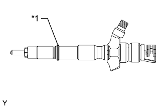
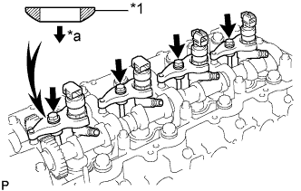
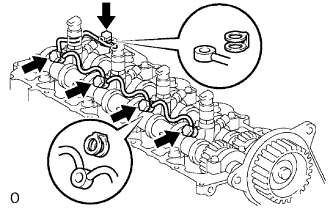
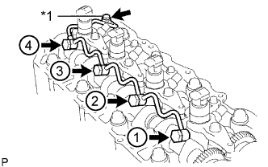
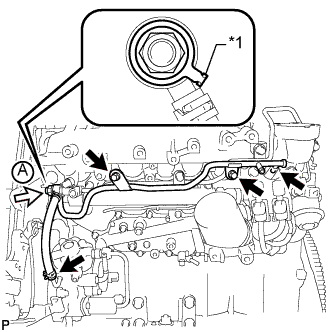

ТОПЛИВНАЯ ФОРСУНКА (для моделей с DPF) > УСТАНОВКА |
| 1. УСТАНОВИТЕ ФОРСУНКУ В СБОРЕ |
 |
Установите 4 новых седла форсунок в головку блока цилиндров.
Нанесите тонкий слой чистого моторного масла на 4 новых кольцевых уплотнения.
|  |
Установите по одному кольцевому уплотнению на каждую форсунку, как показано на рисунке.
| *1 | Новое кольцевое уплотнение |
Установите 4 форсунки в головку блока цилиндров.
При замене форсунки новой деталью зарегистрируйте компенсационный код форсунки (Нажмите здесь).
|  |
Временно закрепите 4 новых шайбы и 4 фиксатора корпуса форсунок № 1 4 болтами.
| *1 | Шайба |
| *a | Вниз |
 |
| *1 | Фиксатор корпуса форсунки № 1 |
Временно закрепите 4 топливных трубки высокого давления гайками штуцеров.
 |
Проверьте трубопровод обратного слива топлива. Убедитесь, что на уплотнительных поверхностях 5 штуцеров нет царапин и вмятин.
Если присутствуют царапины или вмятины, замените трубопровод обратного слива топлива.
|  |
Установите на место трубопровод обратного слива топлива и 5 новых прокладок.
Нанесите тонкий слой масла на 4 полых винта форсунок и пустотелый соединительный болт-штуцер.
Временно закрепите трубопровод обратного слива топлива с помощью 4 полых винтов форсунок и пустотелого соединительного болта-штуцера.
Затяние 4 болта фиксаторов корпуса форсунки.
|  |
Затяните 4 полых винта форсунки в порядке с 1 по 4.
| *1 | Пустотелый соединительный болт-штуцер |
Затяните пустотелый соединительный болт-штуцер.
Снимите 4 топливные трубки высокого давления.
| 2. ПРОВЕРЬТЕ, НЕТ ЛИ УТЕЧЕК ТОПЛИВА |
 |
Убедитесь в отсутствии утечек из соединения трубопровода обратного слива топлива.
Установите новую прокладку и трубопровод обратного слива топлива № 2 на головку блока цилиндров с помощью SST (обратный клапан).
Нанесите немного мыльного раствора (или другой жидкости для обнаружения утечек топлива) на соединение трубопровода обратного слива топлива.
 |
Установите SST (манометр для измерения давления наддува) со стороны возврата топлива трубопровода обратного слива топлива и поддерживайте давление 100 кПа (1,0 кгс/см2, 15 фунтов на кв. дюйм) в течение 60 с, чтобы проверить, появляются ли пузырьки.
После проверки герметичности топливной системы вытрите мыльный раствор с соединения трубопровода обратного слива топлива.
Снимите SST, трубопровод обратного слива топлива № 2 и прокладку.
| 3. УСТАНОВИТЕ КРЫШКУ ГОЛОВКИ БЛОКА ЦИЛИНДРОВ В СБОРЕ |
Удалите весь старый герметик (FIPG) с головки блока цилиндров.
 |
Нанесите герметик в местах, показанных на рисунке.
 | Герметик |
Установите новую прокладку крышки головки блока цилиндров.
 |
Временно закрепите крышку 10 болтами и 2 гайками в порядке, показанном на рисунке. Затем в 2 этапа затяните 10 болтов и 2 гайки в порядке, показанном на рисунке.
Установите 4 новых уплотнительных кольца форсунок в головке блока цилиндров.
| 4. УСТАНОВИТЕ ТРУБКУ ВЕНТИЛЯЦИИ КАРТЕРА |
Подсоедините 2 шланга вентиляции картера и закрепите трубку вентиляции картера болтом на крышке головки блока цилиндров.
| 5. УСТАНОВИТЕ КРЫШКУ ГОЛОВКИ БЛОКА ЦИЛИНДРОВ № 2 В СБОРЕ |
 |
Закрепите крышку головки блока цилиндров № 2 4 болтами.
| 6. УСТАНОВИТЕ ТРУБОПРОВОД ОБРАТНОГО СЛИВА ТОПЛИВА № 2 |
 |
Временно закрепите трубопровод обратного слива топлива № 2 3 болтами.
 | Пустотелый соединительный болт-штуцер |
Временно установите новую прокладку и пустотелый соединительный болт-штуцер.
Затяните 3 болта и пустотелый соединительный болт-штуцер.
| 7. УСТАНОВИТЕ ТРУБОПРОВОД ОБРАТНОГО СЛИВА ТОПЛИВА № 3 |
 |
Нанесите на кольцевое уплотнение обратного топливного клапана тонкий слой топлива.
| *1 | Кольцевое уплотнение |
|  |
Временно закрепите трубопровод обратного слива топлива № 3 2 болтами.
| *1 | Прокладка |
| Топливный обратный клапан |
Временно установите новую прокладку и обратный топливный клапан.
Затяните 2 болта и закрепите обратный топливный клапан.
Подсоедините 2 топливных шланга.
| 8. УСТАНОВИТЕ ТОПЛИВОПРОВОД № 2 |
 |
Нанесите на кольцевое уплотнение обратного топливного клапана тонкий слой топлива.
| *1 | Кольцевое уплотнение |
 |
Временно закрепите топливопровод № 2 с новой прокладкой с помощью пустотелого соединительного болта-штуцера.
| *1 | Прокладка |
 | Пустотелый соединительный болт-штуцер |
| Топливный обратный клапан |
Временно установите новую прокладку и обратный топливный клапан.
С помощью шестигранного ключа на 6 мм затяните пустотелый соединительный болт-штуцер.
Затяните обратный топливный клапан.
| 9. УСТАНОВИТЕ ТОПЛИВНУЮ ТРУБКУ ВЫСОКОГО ДАВЛЕНИЯ № 4 |
Временно закрепите топливную трубку высокого давления № 4 гайками штуцеров.
Закрепите 2 зажима топливной трубки высокого давления № 2 болтом и гайкой.
С помощью разрезной головки на 17 мм затяните гайку штуцера топливной трубки высокого давления со стороны топливной системы Common Rail.
С помощью разрезной головки на 17 мм затяните гайки штуцеров топливной трубки высокого давления со стороны форсунки.
| 10. УСТАНОВИТЕ ТОПЛИВОПРОВОД № 1 |
Временно закрепите топливопровод № 1 с помощью 4 болтов.
Временно закрепите новую прокладку с помощью пустотелого соединительного болта-штуцера.
Затяните пустотелый соединительный болт-штуцер и 4 болта в порядке, показанном на рисунке.
Подсоедините топливопровод № 2 (Нажмите здесь).

| *1 | Топливопровод № 2 | - | - |
| Пустотелый соединительный болт-штуцер | - | - |
| 11. УСТАНОВИТЕ ПАТРУБОК ПОДАЧИ ВОЗДУХА |
 |
Установите новую прокладку на впускной коллектор.
| *1 | Захват |
Закрепите патрубок подачи воздуха 3 болтами.
| 12. УСТАНОВИТЕ КРОНШТЕЙН ГАЗОВОГО ФИЛЬТРА |
Установите кронштейн газового фильтра и закрепите его болтом.
Введите в зацепление зажим и подсоедините жгут проводов.
| 13. УСТАНОВИТЕ ГАЗОВЫЙ ФИЛЬТР № 1 |
Установите газовый фильтр № 1 на кронштейн газового фильтра.
Подсоедините вакуумный шланг.
| 14. УСТАНОВИТЕ КРОНШТЕЙН КОРПУСА ДРОССЕЛЬНОЙ ЗАСЛОНКИ |
 |
Установите кронштейн корпуса дроссельной заслонки и предварительно закрепите его 3 болтами.
Затяните 3 болта кронштейна корпуса дроссельной заслонки в порядке, показанном на рисунке.
| 15. УСТАНОВИТЕ КРОНШТЕЙН КЛАПАНА СИСТЕМЫ СНИЖЕНИЯ ТОКСИЧНОСТИ ОТРАБОТАВШИХ ГАЗОВ |
Закрепите кронштейн клапана системы снижения токсичности отработавших газов болтом.
| 16. УСТАНОВИТЕ ДАТЧИК АБСОЛЮТНОГО ДАВЛЕНИЯ В КОЛЛЕКТОРЕ |
Установите датчик абсолютного давления в коллекторе и закрепите его болтом.
Подсоедините вакуумный шланг и разъем датчика абсолютного давления в коллекторе.
| 17. ПОДСОЕДИНИТЕ ЖГУТ ПРОВОДОВ |
Введите в зацепление 5 зажимов и подсоедините жгут проводов к верхней панели кожуха.
Для моделей с левосторонним рулевым управлением:
Подсоедините жгут проводов и закрепите соединение болтом.
Подсоедините жгут проводов и закрепите соединение болтом.
| 18. УСТАНОВИТЕ ЭЛЕКТРИЧЕСКИЙ КЛАПАН УПРАВЛЕНИЯ РОГ В СБОРЕ |
| 19. УСТАНОВИТЕ ВЕНТИЛЯЦИОННУЮ РЕШЕТКУ В ВЕРХНЕЙ ЧАСТИ КОЖУХА В СБОРЕ |
| 20. ПОДСОЕДИНИТЕ ПРОВОД К ОТРИЦАТЕЛЬНОМУ (-) ВЫВОДУ АККУМУЛЯТОРНОЙ БАТАРЕИ |
| 21. ДОБАВЬТЕ ОХЛАЖДАЮЩУЮ ЖИДКОСТЬ ДВИГАТЕЛЯ |
Затяните пробку сливного крана радиатора вручную.
Затяните пробку сливного крана блока цилиндров.
Заполните радиатор охлаждающей жидкостью с увеличенным сроком замены "Super Long Life Coolant (SLLC)" от компании Тойота, залив ее в трубопровод B расширительного бачка.
| Параметр / Устройство | Заданные условия | |
| для моделей с автоматической трансмиссией | Для моделей с задним подогревателем | 14,9 литра (15,7 кварты США, 13,1 английской кварты) |
| Для моделей без заднего подогревателя | 13,1 литра (13,8 кварты США, 11,5 английской кварты) | |
| для моделей с механической трансмиссией | Для моделей с задним подогревателем | 15,0 литра (15,8 кварты США, 13,2 английской кварты) |
| Для моделей без заднего подогревателя | 13,2 литра (13,9 кварты США, 11,6 английской кварты) | |
Несколько раз сожмите рукой входной и выходной патрубки радиатора, затем проверьте уровень охлаждающей жидкости.
Если уровень охлаждающей жидкости опускается ниже линии В, долейте охлаждающую жидкость SLLC Toyota до линии В.
Установите пробку расширительного бачка радиатора.
Установите вентиляционную пробку с помощью гаечного ключа.
Выпустите воздух из системы охлаждения.
Прогревайте двигатель, пока не откроется термостат. Когда термостат откроется, несколько минут прокачивайте охлаждающую жидкость.
Поддерживайте частоту вращения коленчатого вала двигателя на уровне 2500–3000 об/мин.
Несколько раз сожмите рукой входной и выходной патрубки радиатора, чтобы удалить воздух.
Остановите двигатель и подождите, пока охлаждающая жидкость остынет до температуры окружающего воздуха.
Когда охлаждающая жидкость остынет, убедитесь, что она находится на уровне отметки FULL.
Если уровень охлаждающей жидкости ниже отметки FULL, долейте SLLC от компании Тойота до этой отметки.
| 22. УДАЛИТЕ ВОЗДУХ ИЗ ТОПЛИВНОЙ СИСТЕМЫ |
 |
С помощью ручного насоса, установленного на крышке топливного фильтра, удалите воздух из топливной системы. Продолжайте прокачку, пока сопротивление насоса при работе не возрастет.
Проверьте, запускается ли двигатель.
Если двигатель запускается, перейдите к следующему шагу.
Если запуск двигателя невозможен, прокачайте систему снова с помощью ручного насоса до повышения сопротивления насоса (см. процедуры выше). Затем запустите двигатель.
Выключите зажигание.
Подсоедините портативный диагностический прибор к DLC3.
Включите зажигание (IG) и портативный диагностический прибор.
Сбросьте коды DTC (Нажмите здесь).
Запустите двигатель.*1
 |
Войдите в следующие меню: Powertrain / Engine and ECT / Active Test / Test the Fuel Leak.*2
| *a | Для справки (испытание в режиме Active Test) |
Выполните следующее испытание 5 раз с интервалами включения/выключения 10 с: Active Test / Test the Fuel Leak.*3
После 5-го испытания в режиме Active Test дайте двигателю поработать на холостом ходу в течение не менее 3 мин.

Войдите в следующие меню: Powertrain / Engine and ECT / DTC.
Считайте текущие коды DTC.
Сбросьте коды DTC (Нажмите здесь).
Повторите операции с *1 по *3.
Войдите в следующие меню: Powertrain / Engine and ECT / DTC.
Считайте текущие коды DTC.
| 23. ВЫПОЛНИТЕ РЕГИСТРАЦИЮ |
Зарегистрируйте компенсационный код форсунки (Нажмите здесь).
Выполните настройку объема предварительного впрыска (Нажмите здесь).
| 24. ПРОВЕРЬТЕ, НЕТ ЛИ УТЕЧЕК ОХЛАЖДАЮЩЕЙ ЖИДКОСТИ |
Заполните радиатор охлаждающей жидкостью и подсоедините приспособление для опрессовки системы охлаждения и проверки пробки радиатора.
Прогрейте двигатель.
С помощью приспособления для опрессовки системы охлаждения и проверки пробки радиатора увеличьте давление в радиаторе до 123 кПа (1,3 кгс/см2, 18 фунтов на кв. дюйм) и убедитесь, что давление не падает.
Если давление снижается, проверьте на наличие утечек шланги, радиатор и насос системы охлаждения. При отсутствии внешних утечек проверьте сердцевину нагревателя, блок цилиндров и головку.
| 25. ПРОВЕРЬТЕ, НЕТ ЛИ УТЕЧЕК ТОПЛИВА |
Выполните диагностику в режиме Active Test.
Подсоедините портативный диагностический прибор к DLC3.
Включите зажигание (IG).
Включите портативный диагностический прибор.
Войдите в следующие меню: Powertrain / Engine and ECT / Active Test.
Выполните диагностику в режиме Active Test.
| Дисплей портативного диагностического прибора | Испытываемое устройство | Диапазон регулирования | Замечание по диагностике |
| Test the Fuel Leak | Создание давления в топливной системе Common Rail для проверки наличия утечек топлива | Stop/Start (остановить/запустить) |
|
| 26. ПРОВЕРЬТЕ, НЕТ ЛИ УТЕЧЕК МАСЛА |
Запустите двигатель. Убедитесь, что в узлах, в которых выполнялись работы, нет утечек масла.
| 27. ПРОВЕРЬТЕ УРОВЕНЬ МОТОРНОГО МАСЛА |
Прогрейте двигатель, затем остановите его и подождите 5 минут. Уровень моторного масла должен находиться между отметками низкого и максимального уровней на щупе проверки уровня масла.
Если уровень низкий, проверьте, нет ли утечек, и долейте масло до максимальной отметки.